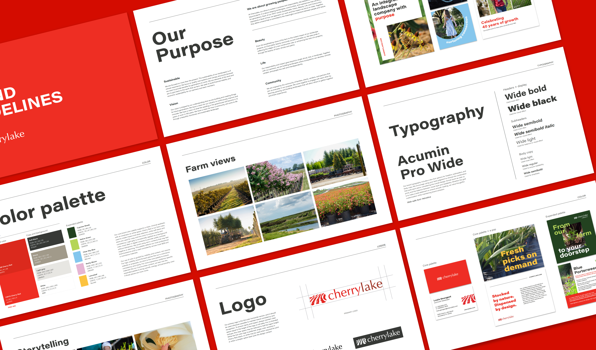
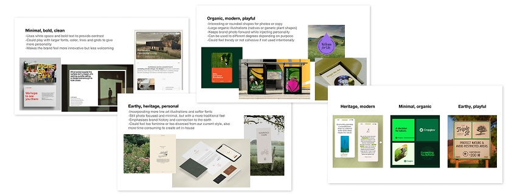
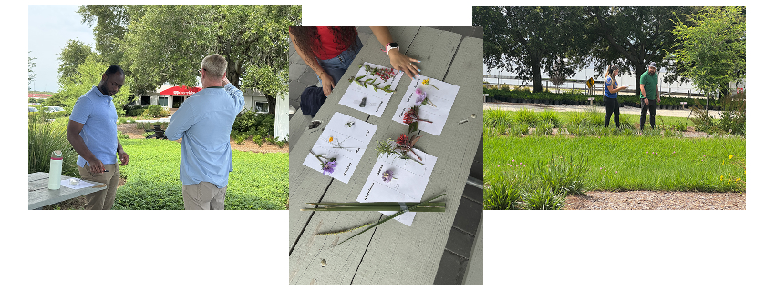
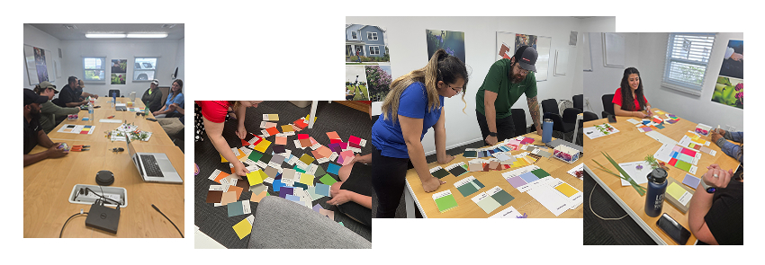
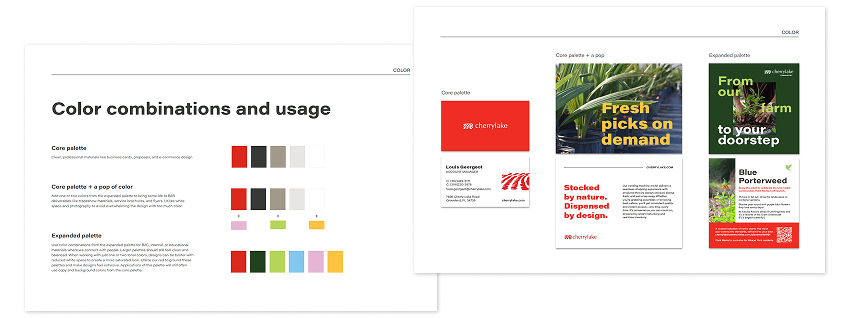
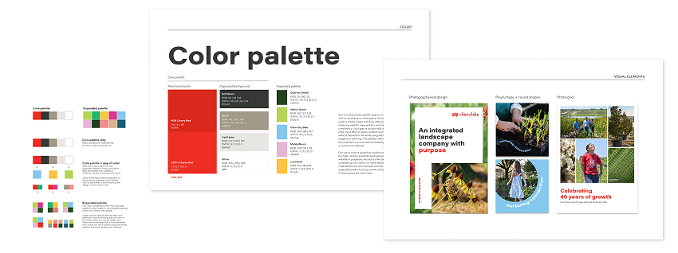
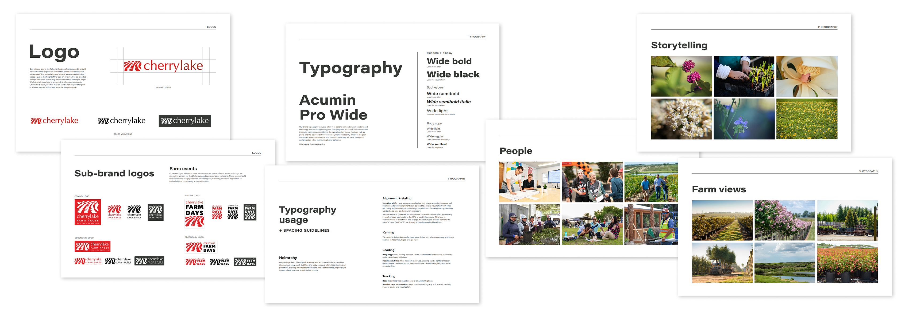
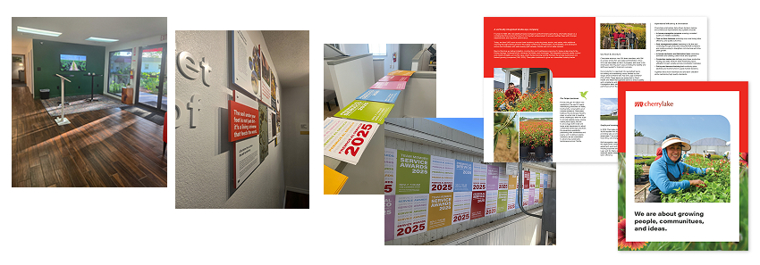

Cherrylake is a vertically integrated landscaping company with four distinct branches: Farm, Construction, Maintenance, and Communities. I led the process of designing a new, scalable brand identity for the company, versatile enough to flex from the professionalism of a construction proposal to the warmth of a community education event, while staying unmistakably Cherrylake. The project spanned brand strategy, a color workshop and palette development, a full brand guide, and a reimagined lobby experience.

The challenge
Cherrylake’s four branches talk to very different people, for different reasons:
- Farm, both a grower and a broker, is the company’s core identity and the most versatile, holding a professional tone in some contexts while showing more personality in others, like farm tours and tradeshows.
- Construction and Maintenance stay close to B2B throughout, built on bidding and win-win partnerships where trust matters most, so the identity needed to stay disciplined and let project photography carry the personality.
- Communities works directly with homeowners on native, pollinator-friendly landscape design, and needed warmth and connection well beyond a standard B2B look.
One identity needed to work across all of it, appealing to these different audiences while still feeling like Cherrylake.
Exploring brand personality
Before touching color palettes or logo files, we needed common language for direction, so I pulled outside reference examples for us to react to together instead of describing taste in the abstract. We weighed three directions: minimal, bold, clean; earthy, heritage, personal; and organic, modern, playful.
We landed on minimal, bold, clean as our primary direction, an affirmation of the brand we’d already been building, paired with a modern, playful twist we could flex in and out depending on audience. It felt like a natural evolution rather than a reinvention, and it pointed to color as the clearest lever for that range without touching the logo.

The color workshop
Rather than choosing new colors as a marketing team, we wanted the palette to come from the people who live the brand every day, so I facilitated a company-wide color workshop, run twice with mixed groups pulled from every department.
The icebreaker. Outside, each group got a sheet of abstract words, like harmony, abundance, and passion, and pulled cuttings from our native gardens that felt like a match, a low-stakes way to get people thinking creatively before making real decisions.

Matching color to our WHY. Back inside, groups worked with Pantone swatches and our five WHY words (Sustainable, Vision, Beauty, Life, Community), choosing one color per word and talking through why.

What we learned. One clear outlier emerged: our existing dark red got rejected across all four groups, described as “dried blood” and “old school.” That told us where it belonged going forward, not at the center of the new system.
I turned the results into a “Color Workshop Wrapped,” a Spotify Wrapped-style recap, and emailed it to participants.

Building the palette: core, expanded, and “times of day”
Using the workshop results, I pulled shades that worked alongside our hero red and tested how they’d layer together into a simple framework: Cherrylake at different times of day.
- Core, “Business hours.” Hero red, softened black, white, light gray, and a new midtone gray (Stone), for stationery and core collateral.
- Expanded, in small doses, “After work.” One or two expanded colors alongside the core, for tradeshows and e-commerce.
- Full Expanded, “Weekends.” The full range at maximum creativity, for Communities work and internal culture moments.

Every tier keeps the iconic red present, so no matter how far into the palette a piece goes, it still reads as Cherrylake.
Narrowing the palette through real use
I pulled far more candidate colors than we kept, and rather than making the final call myself, team members across the department designed with them to see how they felt in use.

That process ruled out anything too dark or heavy for large blocks of color. Two principles guided every cut: photography is our strongest asset, so the palette needed to complement it, not compete; and white space and a clean feel had to be preserved.
Two final colors also had real history: Clear Sky Blue echoes a blue used for a past curbside sub-brand, and Native Green is close kin to the green on our website’s native plant icon, reinforcing that this was an evolution. Each color is named after a native plant or something rooted in Cherrylake’s brand story.

The brand guide
Color needed the most strategic work, but the finished guide covers the full system, all designed to scale the way the palette does.
Logo system. The primary logo, redesigned in 2016, stayed untouched. I documented its usage rules, along with our sub-brand logos, and created asset libraries for ease of use across the company, as well as vendors and sponsors.
Typography. Acumin Pro Wide with a clear weight hierarchy, plus house rules that keep materials consistent day to day. One shift made a big difference: moving away from all-caps headings to better match our knowledgeable and inclusive presence in the industry.
Visual language and photography. Photography leads the storytelling, framed by bold type and white space. I documented five photography categories to keep sourcing consistent, and closed the guide with a resources section so the team can self-serve.

Proving it works: the guide in real life
The lobby. The first test was our own front door. We painted one wall our new Cypress Shade green, mounted a screen playing farm and team footage, designed a museum-style soil-health art installation to educate and inspire, refreshed our wayfinding signage, and purchased a botanical rug that adds a playful on-brand element while hiding the dirt tracked in from the farm.

The employee event. As soon as the guide was finished, we wanted field staff to have a dramatic first touchpoint with the new colors. I designed posters based on old-school wheatpasting and we posted them around an employee event, so the palette’s real-world appearance was physical and unavoidable.

The tour brochure. Cherrylake regularly hosts tours on the farm, often for academic and horticulture groups. The brochure they leave with is one of our biggest touchpoints with an audience that actually understands plants and land at a professional level. I designed it using the new system, leaning into the brand’s more expert, credible side to serve that audience and leave a visual impact.

Within a few months of shipping, the new system faced its first real stress test with two very different audiences. Both held up, and we’ve received a lot of positive internal feedback that the new brand reflects our culture and passion.
Impact
This project solved a real, everyday problem: a lack of visual direction slowing design down across four very different parts of the business. Since launch, marketing designs faster thanks to a clear, tiered system; the whole company understands the “why” behind the brand, because they helped build it; and the creative team is positioned as brand experts, not just executors, with more room to be creative, not less.
I’m proud of this project because it’s proof that a strong system doesn’t have to constrain a brand. Done well, it gives everyone more room to move.